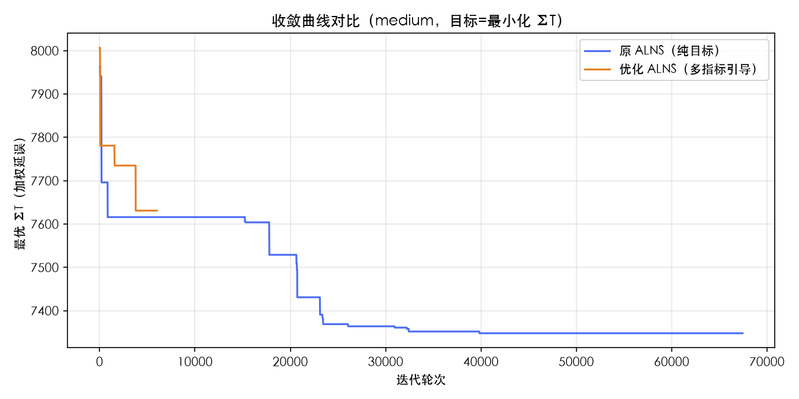
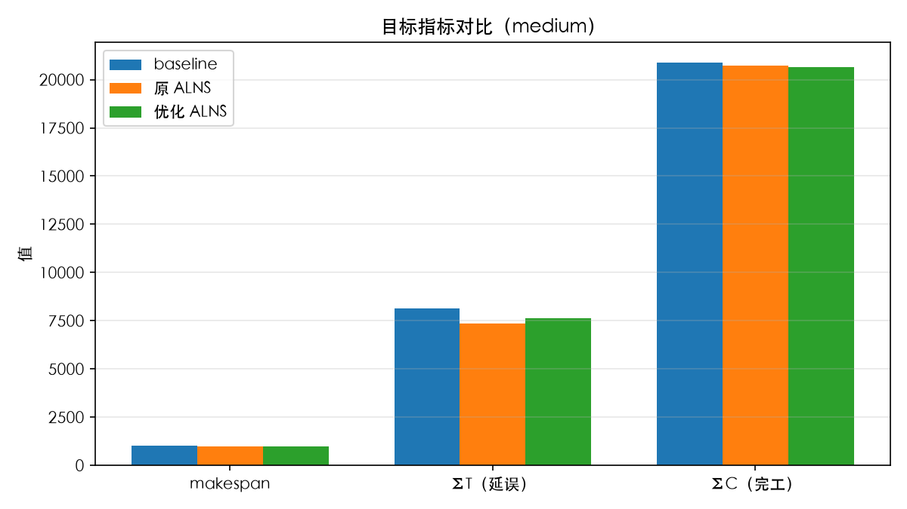
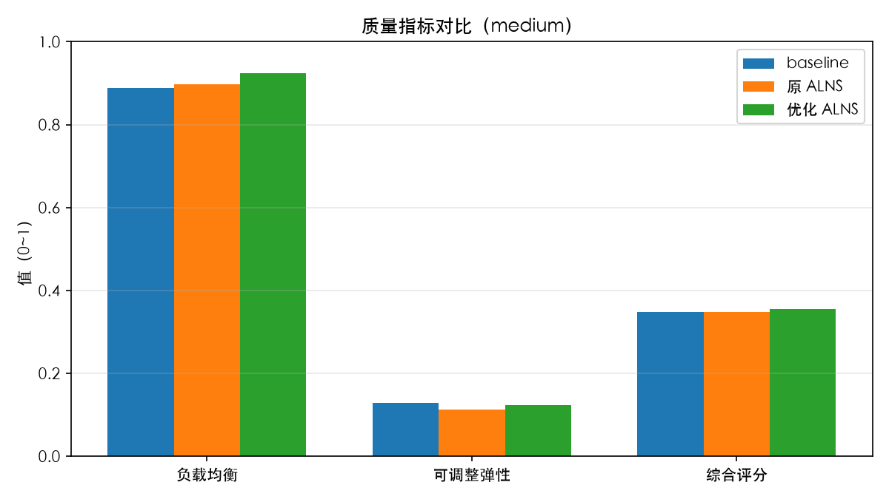

优化前：ALNS 接受准则 = 单一 λ 加权目标（λ1·Cmax+λ2·ΣT+λ3·ΣC），固定时间限制终止。
优化后（方案 V3 三处改动）：① 接受准则扩展为多指标引导目标 obj/scale + w_bal·(1−balance) + w_flex·(1−flex)，将负载均衡与可调整弹性纳入搜索引导；② 新增相对改进率终止（连续 N 轮改进 < δ 即停，替代固定时间限制）；③ 每次迭代记录收敛曲线，支持量化/对比/追溯。



| 指标 | baseline v0 | 原 ALNS v1 | 优化 ALNS v2 | v2−v1 增量 |
|---|---|---|---|---|
| makespan | 1017 | 976 | 994 | +18 |
| ΣT（延误） | 8149 | 7348 | 7631 | +283 |
| ΣC（完工） | 20877 | 20729 | 20652 | -77 |
| 负载均衡 | 0.8892 | 0.8973 | 0.9234 | +0.0261 |
| 可调整弹性 | 0.1279 | 0.1133 | 0.1236 | +0.0103 |
| 耗时(s) | 0.00 | 20.00 | 3.13 | -16.87 |
| 综合评分 | 0.3480 | 0.3488 | 0.3550 | +0.0062 |
[
{
"version": "v0",
"change": "构造启发式（EDD 基线）",
"commit": "-",
"instance": "medium",
"reference": {
"type": "lower_bound",
"value": 683.0
},
"config": {
"lambda": [
0.0,
1.0,
0.0
],
"w_bal": 0.15,
"w_flex": 0.15,
"instance": "medium",
"seed": 42
},
"metrics": {
"objective": 8149.0,
"obj_norm": 10.931186,
"makespan": 1017,
"tardiness": 8149,
"completion": 20877,
"gap": 10.931186,
"gap_type": "reference",
"hard_violation": 0.0,
"soft_violation": 8149.0,
"solve_time": 0.001394,
"cv": 0.0,
"balance": 0.889206,
"flex": 0.12795,
"lower_bound": 683.0
},
"score": 0.348033,
"delta": null
},
{
"version": "v1",
"change": "原 ALNS（纯 λ 目标）",
"commit": "-",
"instance": "medium",
"reference": {
"type": "lower_bound",
"value": 683.0
},
"config": {
"lambda": [
0.0,
1.0,
0.0
],
"w_bal": 0.15,
"w_flex": 0.15,
"instance": "medium",
"seed": 42
},
"metrics": {
"objective": 7348.0,
"obj_norm": 9.758419,
"makespan": 976,
"tardiness": 7348,
"completion": 20729,
"gap": 9.758419,
"gap_type": "reference",
"hard_violation": 0.0,
"soft_violation": 7348.0,
"solve_time": 20.000118,
"cv": 0.0,
"balance": 0.897314,
"flex": 0.113345,
"lower_bound": 683.0
},
"score": 0.348817,
"delta": {
"objective": -801.0,
"makespan": -41,
"tardiness": -801,
"completion": -148,
"balance": 0.008108,
"flex": -0.014605,
"cv": 0.0,
"score": 0.000784
}
},
{
"version": "v2",
"change": "优化 ALNS（多指标引导 + 智能终止）",
"commit": "-",
"instance": "medium",
"reference": {
"type": "lower_bound",
"value": 683.0
},
"config": {
"lambda": [
0.0,
1.0,
0.0
],
"w_bal": 0.15,
"w_flex": 0.15,
"instance": "medium",
"seed": 42
},
"metrics": {
"objective": 7631.0,
"obj_norm": 10.172767,
"makespan": 994,
"tardiness": 7631,
"completion": 20652,
"gap": 10.172767,
"gap_type": "reference",
"hard_violation": 0.0,
"soft_violation": 7631.0,
"solve_time": 3.133901,
"cv": 0.0,
"balance": 0.923435,
"flex": 0.123617,
"lower_bound": 683.0
},
"score": 0.355043,
"delta": {
"objective": 283.0,
"makespan": 18,
"tardiness": 283,
"completion": -77,
"balance": 0.026121,
"flex": 0.010271,
"cv": 0.0,
"score": 0.006226
}
}
]